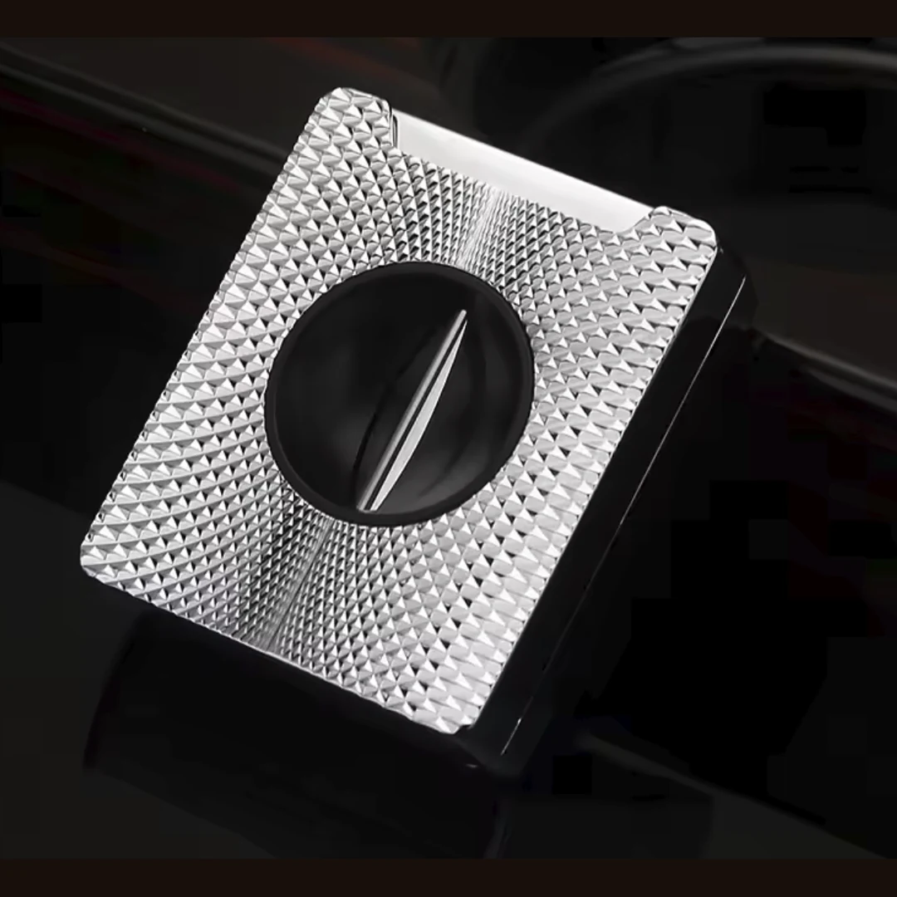
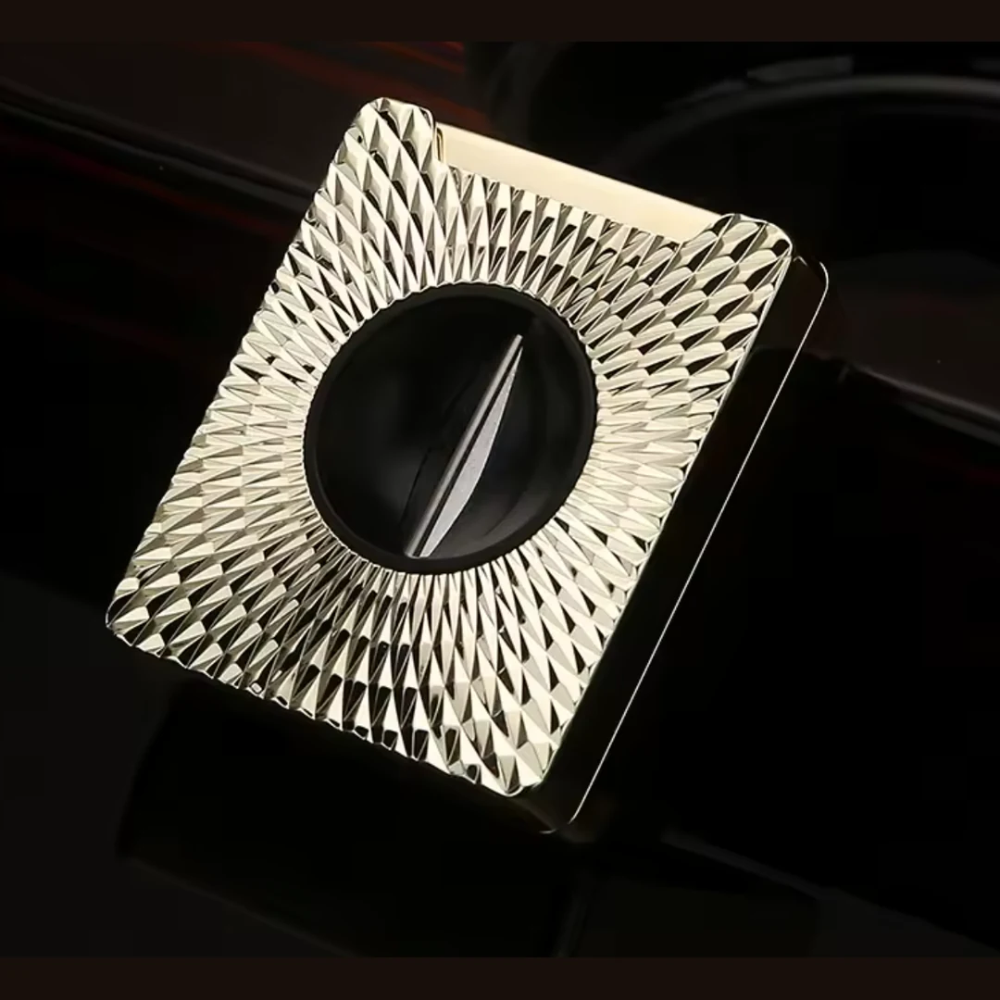
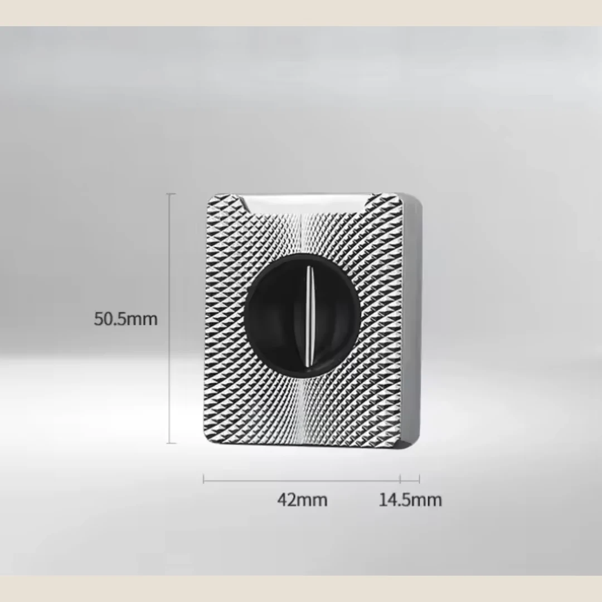
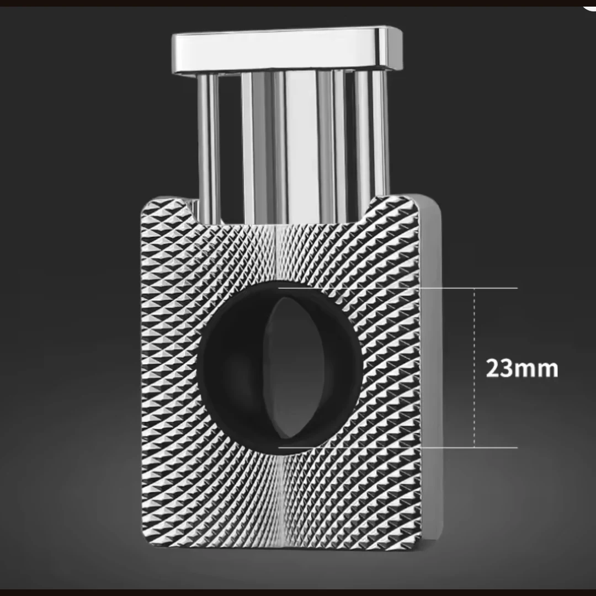
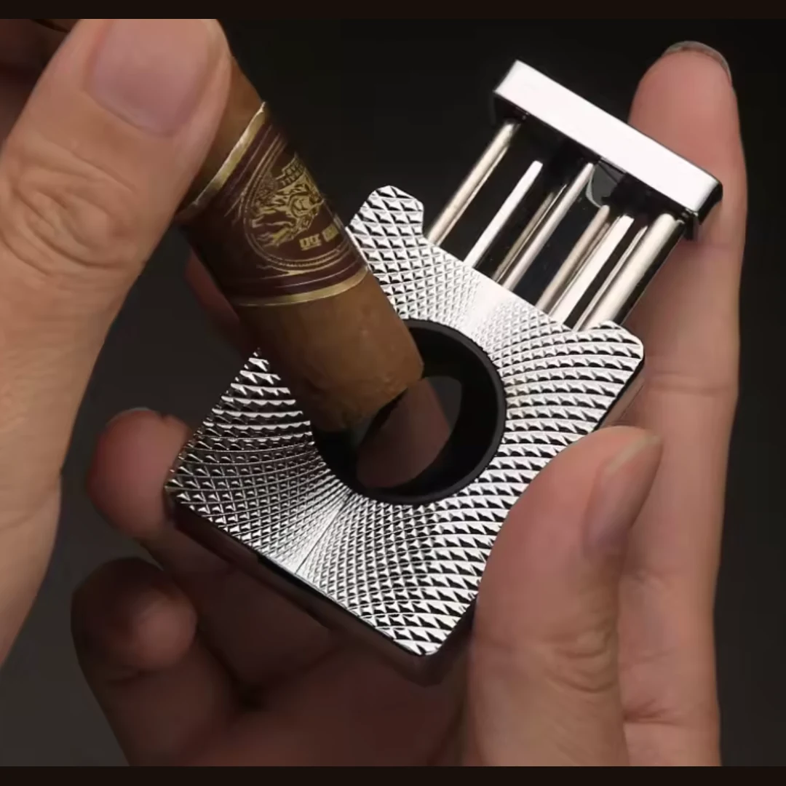

Cortadores · Artículo documentado
Cortapuros en V de metal con acabado geométrico
Cortapuros metálico de corte en V con una superficie de relieve geométrico tridimensional. Su mecanismo de accionamiento por pulsación permite preparar el corte con un solo movimiento. Formato compacto, disponible en acabados plateado y dorado; características y desempeño según descripción del proveedor, pendientes de verificación independiente.
Características descritas
- Cuchilla de corte en V; desempeño pendiente de verificación
- Mecanismo accionado mediante pulsación
- Cuerpo metálico con relieve geométrico tridimensional
- Acabados: plateado y dorado (existencias por confirmar)
- Dimensiones de referencia del proveedor: 50.5 × 42 × 14.5 mm
Acabados descritos: Plateado y Dorado. Las existencias por acabado están pendientes.
Precio, disponibilidad y envío pendientes de confirmación. Esta página informa sobre el producto, no recibe pedidos. Algunas características proceden de la información del proveedor y no equivalen a comprobación técnica independiente.




